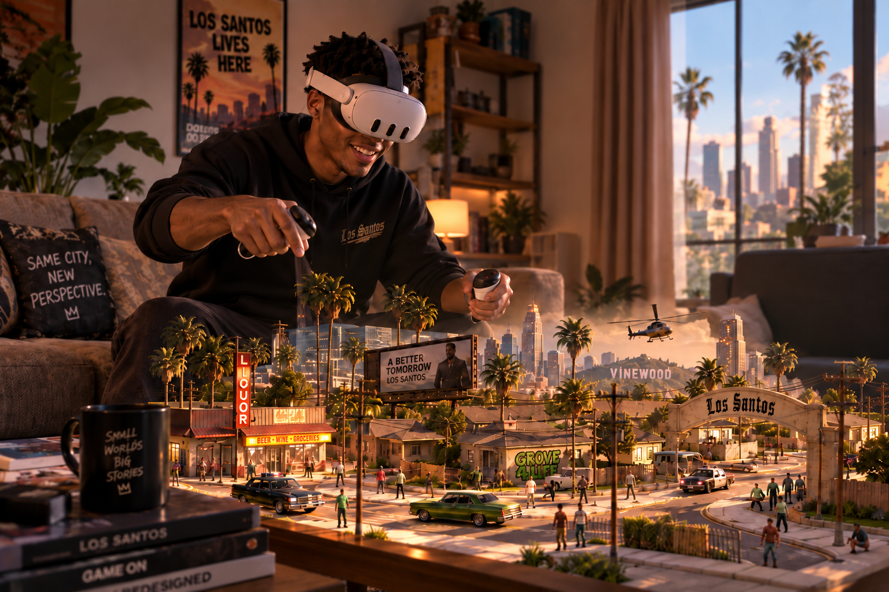
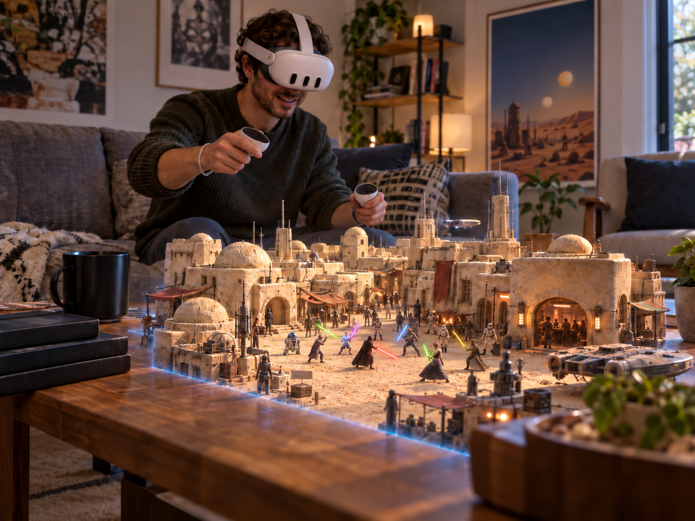
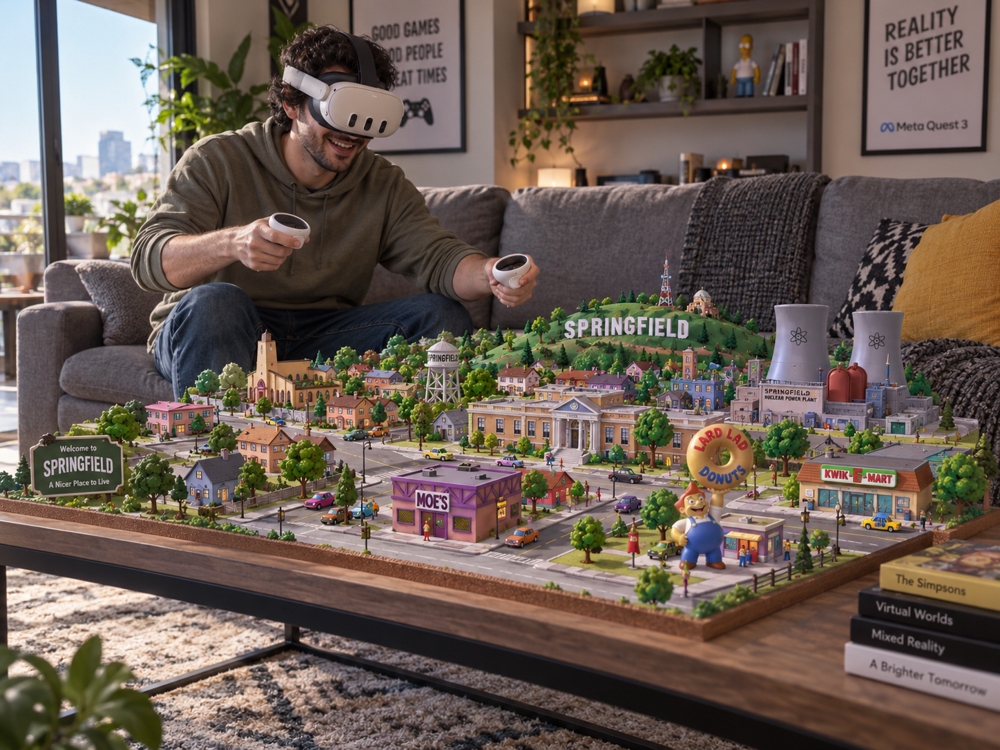
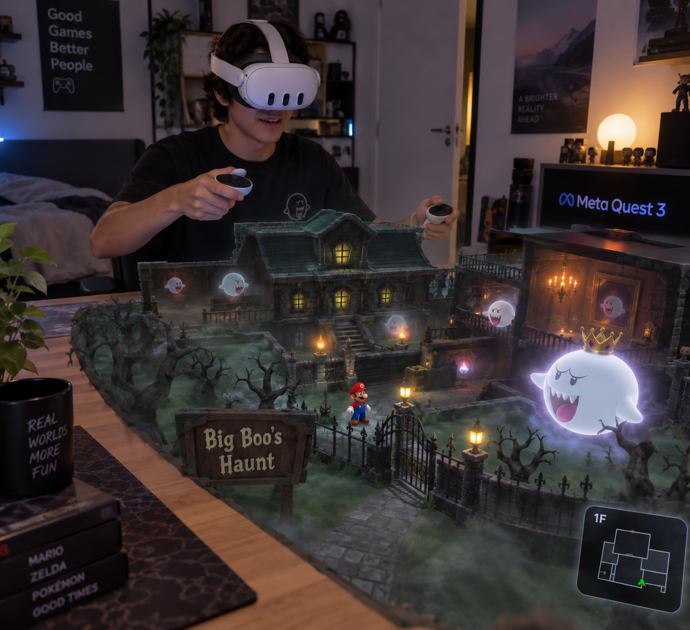

Diorama
MR Mods
Diorama MR Mods brings classic games into physical space as interactive dioramas that can be observed, explored and played from a new perspective.
01 / 04
Mod downloads
Download
the mods.
Choose a project below to download its installer or explore the manual setup options.
01 Jedi Academy v0.1.0 alpha 3

Early alpha release. Original Jedi Academy game data is not included.
Easy installation
The installer finds your Jedi Academy files, checks them, installs the Quest app and transfers the required game data.
Download installer v0.1.0 alpha 3 ↗Runs natively on Meta Quest. A Windows PC and USB connection are only required for installation.
Diorama MR features
- Mixed-reality diorama mode for the Jedi Academy campaign
- Adjustable diorama position, rotation and scale
- Force powers and weapon aiming adapted to the diorama perspective
- Switch between Diorama MR and JKXR's immersive VR mode
Requirements for installation
- Compatible Meta Quest with Developer Mode enabled
- Windows PC and USB connection
- Legally obtained PC copy of Jedi Academy
- USB debugging authorization
After installation
Launch the mod directly on the headset. The PC is not required while playing.
Windows may show a SmartScreen warning because the installer is not Authenticode-signed. Verify its SHA-256 checksum before running it.
Credits, source and legal notice +
Built on community work including JKXR, OpenJK, OpenXR SDK Source, gl4es, OpenAL Soft Android, gsl-lite, ioquake3 and glshim.
Unofficial fan-made open-source modification. Not affiliated with or endorsed by Lucasfilm, Disney, Activision, Raven Software, Electronic Arts, Meta or the original rights holders. Users must provide their own legally obtained game copy.
Jedi Academy already runs natively in immersive VR on Meta Quest through Team Beef's JKXR. This mod builds on that work by adding a mixed-reality diorama mode.
Although Jedi Academy contains large maps, its level structure works surprisingly well as a diorama. The entire map does not need to fit inside your room at once. As new game areas are revealed, they become new sections of the miniature environment that can be repositioned and scaled around your physical space.
Making the external diorama perspective work also required changes to the game's visibility and rendering systems, so effects, doors, characters and other elements remain active and visible even when the headset is physically far from the player character.
Some maps can still expose several areas at the same time, causing more of the environment to be rendered than intended and producing occasional performance drops. So far I have only encountered this in a few specific situations, and I am still refining the visibility rules for those maps.
Force powers and weapon aiming use a hybrid approach between immersive interaction and traditional game controls. You point with your hand to select positions directly in the scene, while other actions remain button based. The lightsaber, for example, currently uses button controls. These interactions are still experimental, and feedback will help me decide whether they should remain hybrid, become fully button based or move further toward immersive hand control.
The full campaign has not yet been tested from beginning to end, so some maps, scripted moments, controls or performance-heavy areas may still need specific Diorama MR adjustments. If you find a bug, an area that does not perform well, or an interaction that has not been properly adapted, please send a report. I'll investigate it and work on a fix or improvement for a future update.
Found something or have an idea? Send feedback ↘02 GTA: San Andreas v0.1.0 preview 1
Requires your own legally purchased Google Play copy of GTA San Andreas for Android 2.11.311 (ARM64 complete split APK set) and the supported PS2-style audio archive. Game data and a prebuilt modified APK are not included.
Easy installation
The installer checks your supplied game files, creates your personal Quest build locally and installs it on the headset.
Download installer Preview 1 ↗Runs natively on Meta Quest. A Windows PC, USB connection and internet access are only required for the initial build and installation.
Diorama MR features
- Los Santos rendered as a mixed-reality miniature in your physical room
- Three diorama modes: Track, Follow and Fixed
- Adjustable diorama position, rotation and scale
- Controls adapted for combat, vehicles and mission interactions
- Mission and follow-target markers remain visible beyond the rendered area, helping orient you through your physical room
- Passthrough that responds to the game's weather and time of day
- Switch between Diorama MR and the immersive VR mode inherited from the underlying port
Requirements for installation
- Meta Quest with Developer Mode and USB debugging enabled; Quest 3S is currently tested
- Windows 10 or 11 PC with approximately 15 GB free
- Approximately 6 GB free on the headset
- Official Google Play GTA San Andreas 2.11.311 ARM64 complete split APK set
- Supported PS2-style audio archive from the “Original plan mod pack” dated 16 August 2026
- Android phone or tablet with the official game, or a previously exported complete split set
- Internet access for the initial build-tool download
After installation
Launch the personal build directly on the headset. The PC is not required while playing.
The installer is not currently code-signed, so Windows may show an unknown-publisher warning. Verify the downloaded file against the published SHA-256 checksum.
Compatibility, FAQ and legal notice +
Important compatibility note
The game must be the official Google Play ARM64 release 2.11.311 (versionCode 4234641). Modified, merged, re-signed or third-party APK downloads are rejected. A single base APK is not enough; keep base.apk with every exported split_*.apk, including the ARM64 and main-data splits.
For audio, use gta-sa-ps2-style-mod-pack_1786856007_737162.7z from the “Original plan mod pack” dated 16 August 2026. CLASSIC ADVANCED v1.0 and v1.1 are not compatible.
Why is there no APK download?
A prebuilt modified APK would redistribute Rockstar code and game assets. The installer contains only the adaptation and build workflow, then creates a personal package locally from files supplied by the game owner.
Legal and safety
Unofficial fan-made modification. Not affiliated with, endorsed by or sponsored by Rockstar Games, Take-Two Interactive or Meta. Grand Theft Auto, Grand Theft Auto: San Andreas and related names and assets belong to their respective owners.
The installer does not contain Rockstar game data, the external audio pack, save files, personal settings or signing keys. Keep the room clear and use the platform safety features appropriate for your environment.
Turning an open world like GTA San Andreas into a diorama creates a different challenge from working with self-contained levels. The game needs to render enough of Los Santos to make its streets and the shape of the city readable from a distance, while keeping the visible area small enough to run reliably on the headset.
I tested several visibility ranges and settled on a player-centered rendered area that, for me, offers a good balance between performance and the feeling of looking at a real miniature. This is not necessarily final. Depending on future optimizations and player feedback, I may add more options for the size and extent of the visible area.
A considerable amount of work has already gone into making the visibility system understand what should remain visible, but there are still some gaps. Certain large surfaces, such as a continuous grass area, may be treated as one complete piece. In some situations, they can disappear even though part of the surface falls inside the visible radius, leaving transparent areas in the diorama.
Buildings present a related challenge. I would like structures that cross the edge of the visible radius to remain complete instead of being cut in half. However, some buildings are connected to other geometry, so rendering the entire structure can reveal much more than intended or affect performance. I plan to continue refining these rules to make the edge of the visible area feel more natural and consistent.
I also experimented with a larger system using one rendered region around the player, another around the physical observer, and a continuous visible path connecting them. The result was too unstable in terms of performance, so the current version uses only the player-centered region. The idea has not been completely discarded and may return in another form.
Mission objectives and characters that need to be followed can be located beyond the rendered area. Their markers remain visible in the correct direction outside the miniature, turning the physical room into a navigation reference. Even when the destination itself is not yet visible, it is possible to look across the room and understand where to go without rendering the entire city.
The three diorama modes change how the miniature behaves in your room rather than changing its visual perspective. Track works like a treadmill: the character remains around the center while the scenery moves underneath, making it especially practical for playing seated or with the diorama positioned on a table. Follow uses a similar approach but maintains a trailing view behind the character or vehicle. It can make the game easier to follow, although the additional visual movement may be less comfortable for players who are sensitive to motion.
Fixed is the mode I find most interesting when there is enough physical space. The diorama remains positioned in the room while Los Santos is gradually revealed as the character or vehicle moves through the city. It feels closer to having a physical miniature of Los Santos occupying the room.
Whichever mode I use, my personal preference is to keep the diorama as far away and as small as possible. I am particularly interested in the feeling of observing a miniature city rather than standing inside the game world.
Adapting the controls is another ongoing challenge because GTA San Andreas contains many different mechanics, vehicles and mission-specific interactions. Aiming is currently controller-based and uses the analog stick. I am considering adding an optional immersive aiming mode, similar to the hybrid approach used in Jedi Academy, allowing players to point the weapon physically while preserving the traditional controls.
Installation is more involved than with the other mods because the original Android game must be exported as a complete split APK set. It is important to follow every step carefully, including installing the required extraction app on the phone or tablet. Once the correct game files and supported audio archive are prepared, the installer handles the remaining process and the setup is straightforward.
GTA San Andreas is a very large game, and the full campaign has not yet been tested from beginning to end. If you find a bug, an area that performs poorly, or a control, mission or interaction that has not been properly adapted, please send a report. I'll investigate it and work on a fix or improvement for a future update.
Found something or have an idea? Send feedback ↘03 The Simpsons: Hit & Run v0.95

A legally obtained PC copy of The Simpsons: Hit & Run is required. Original game data is not included.
Easy installation
The installer finds your original game folder, checks the files, installs the Quest app and transfers the required game data.
Download installer v0.95 ↗Runs natively on Meta Quest. A Windows PC and USB connection are only required for installation.
Diorama MR features
- Springfield rendered as a mixed-reality miniature in passthrough, with the familiar Simpsons clouds floating in your physical room
- Two diorama modes: Treadmill and Fixed
- Two sizes for the fully rendered spotlight
- Optional extended map view showing surrounding roads and terrain
- Adjustable diorama position, rotation and scale
- Spatial audio aligned with the diorama, preserving direction and distance
- Interiors, HUD and mission information adapted to the diorama perspective
- Switch between Diorama MR and the immersive VR mode inherited from the underlying port
Requirements for installation
- Meta Quest 3 with Developer Mode enabled
- Windows PC and USB data connection
- Legally obtained, unmodified PC copy of Hit & Run
- USB debugging authorization and free storage space
After installation
Launch the mod from Unknown Sources on the headset. The PC is not required while playing.
Some missions, effects, interiors and performance-heavy areas may still need Diorama MR-specific adjustments.
Credits and legal notice +
Built on community work by kote2345, Carlox33, ZenoArrows and Svxy.
Unofficial fan-made adaptation. Not affiliated with Radical Entertainment, the original publishers, Meta, The Simpsons rights holders or upstream port authors. Do not redistribute original copyrighted game assets.
Like GTA San Andreas, The Simpsons: Hit & Run takes place in an open world. Springfield is not as large as Los Santos, but adapting it as a diorama creates many of the same visibility and performance challenges.
For this mod, I decided to provide different ways of displaying the city instead of relying on a single visibility setup. The central spotlight contains the fully rendered, full-color environment around the character. Players can choose between two spotlight sizes, switching between them depending on the scene, the desired view and headset performance.
There is also an optional extended map view. When enabled, a larger surrounding area remains visible in a simplified gray form, showing terrain and roads without fully rendering every object. This makes it possible to see where a street continues or curves and to understand the broader shape of Springfield without the performance cost of displaying the complete environment.
This extended view is optional. Players can disable it and use only the fully rendered spotlight, or combine it with either of the available spotlight sizes. I am still refining the balance between visibility and performance, but the current options make it possible to change the presentation according to what works best at each moment.
In Treadmill mode, the character remains close to the center while Springfield moves underneath. This works particularly well with the diorama positioned on a table and makes it practical to play seated or without using much physical space.
Fixed mode keeps the diorama anchored in the physical room while the character moves through the city. With enough space, it creates a stronger impression of Springfield existing as a larger physical miniature around the player.
The audio was also adapted to the diorama perspective. Sounds remain connected to their positions within the miniature, preserving direction and distance. A vehicle moving on the left side of the diorama, for example, is heard from the left, while sounds become more distant as the character moves farther away.
The campaign has been tested up to the Bart section, but I have not yet completed the entire game in Diorama MR. Later missions may contain mechanics, interiors or interactions that still need specific adaptation. If you find a bug, an area that performs poorly, or a mission or control that does not work correctly, please send a report. I'll investigate it and work on a fix or improvement for a future update.
Found something or have an idea? Send feedback ↘04 Super Mario 64 v0.9.0 beta

The installer and APK do not contain a ROM or proprietary Nintendo assets.
Easy installation
The installer checks your compatible ROM, installs the Quest app and copies the ROM to the correct location.
Download installer v0.9.0 beta ↗Runs natively on Meta Quest. A Windows PC and USB connection are only required for installation.
Diorama MR features
- Super Mario 64 rendered as a mixed-reality miniature in your physical room
- Adjustable diorama position, rotation and scale
- Room-scale observation independent from the original game camera
- Movement adapted to the diorama perspective
- Spatial audio aligned with the miniature
- Gameplay- and level-responsive passthrough color effects
- SM64 Co-Op DX co-op available in Diorama MR
- Switch between Diorama MR and other view modes from the underlying VR port
Requirements for installation
- Meta Quest 3 with Developer Mode enabled
- Windows PC and USB connection for the installer
- Legally obtained, unmodified US Super Mario 64 .z64 ROM
- USB debugging authorization
After installation
Launch the mod directly on the headset. The PC is not required while playing.
Windows may show an Unknown Publisher warning because the installer is not Authenticode-signed. Only continue with a file downloaded from this page and verified against the published checksum.
Credits and legal notice +
Built on the work of fulldivegames' SM64 Co-Op DX VR port, SM64 Co-Op DX, sm64ex-coop, sm64ex, sm64-port and the Super Mario 64 decompilation community. See the project repository for source and complete lineage.
Unofficial, non-commercial fan project. Not affiliated with Nintendo, Meta or upstream projects. Users must provide their own legally obtained compatible game copy.
Super Mario 64 works particularly well as a diorama because most of its levels are already designed as self-contained spaces. Unlike the open worlds of GTA San Andreas and The Simpsons: Hit & Run, many of Mario's levels can be rendered in their entirety and scaled to fit comfortably inside a physical room.
This makes it possible to see the structure of a complete level as a miniature while still playing the original game. The diorama can be repositioned, rotated and resized, and the player can physically observe it from different angles without being limited to the original game camera.
Movement was adapted to remain intuitive from the diorama perspective, while spatial audio preserves the position of Mario and other sounds within the miniature.
Passthrough color effects allow the physical room to respond to events inside the game. The color changes when Mario collects a star or takes damage, and some levels influence the room according to their environment—for example, lava areas introduce a red tone.
These effects are still open to experimentation. More events and level-specific colors may be added, existing ones may be adjusted or removed, and I am considering making the system optional for players who prefer to keep the passthrough unchanged. In the current version, the color effects are always enabled.
Diorama MR builds on the native Meta Quest VR port developed by fulldivegames, which itself builds on SM64 Co-Op DX. Other view modes from that port remain available alongside Diorama MR. The co-op system inherited from SM64 Co-Op DX is also working well with the diorama mode.
The level-select cheat available through earlier SM64 Co-Op DX VR work allows players to visit different levels directly. Besides being useful for players who want to explore the game freely, it has also made it possible to test a large part of the game without completing the entire campaign in sequence.
One minor visual limitation can appear in levels containing separate rooms. From the external diorama perspective, a few objects belonging to rooms that are not currently rendered may sometimes remain visible.
This does not bother me much during normal gameplay, and I have already removed most of these out-of-room objects. A few isolated cases still remain, particularly around the castle interiors. I will continue observing how noticeable they are in practice and use player feedback to decide whether this system needs further refinement.
Most of the levels and situations I have tested are working well, and the game appears to be playable from beginning to end in Diorama MR. However, I have not yet completed a full playthrough of the entire game in this version. If you find a bug, a level that does not display correctly, an unexpected object, or a control or interaction that does not work as expected, please send a report. I'll investigate it and work on a fix or improvement for a future update.
Found something or have an idea? Send feedback ↘Feedback
Something
to say?
Found a bug, have an idea, or just want to tell me how the mod felt? Write to me here.
Optional support
Support Galatea Interactive
Enjoying our mixed reality projects? Buy me an energy drink and help fuel future experiments.
Contributions are always optional. All Diorama MR Mods downloads remain free.
Development updates